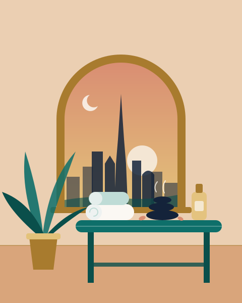

दुबई में मसाज, आपके शरीर की ज़रूरत के हिसाब से
मसाज के इक्कीस प्रकार, सीधी-सादी भाषा में, AED में आम क़ीमतों और शहर भर में हमारे जाँचे हुए सेंटरों के साथ। यह गाइड उन लोगों के लिए है जो यहाँ रहते हैं, वीकेंड घूमने आए टूरिस्टों के लिए नहीं।
हर सेंटर का पता और फ़ोन नंबर अक्टूबर 2026 में किसी आधिकारिक या भरोसेमंद स्रोत से मिलाकर जाँचा गया।

मसाज के सभी प्रकार, उनके असर के हिसाब से
समझ नहीं आ रहा कि क्या बुक करें? पहले वह ग्रुप चुनें जो आज आपके मूड से मेल खाता हो, फिर कोई प्रकार खोलकर देखें कि सेशन में क्या होता है और कहाँ जाना है।
आराम और सुकून
धीमे, तेल वाले ट्रीटमेंट, तनाव कम करने, अच्छी नींद और शांत दिमाग़ के लिए।


दर्द, खेल और रिकवरी
गाँठों, चोटों, डेस्क पर बैठने की आदतों और ट्रेनिंग की थकान के लिए ज़्यादा दबाव वाला, सटीक काम।


दुनिया की परंपराएँ
सदियों पुरानी तकनीकें, बैंकॉक से केरल और मराकेश तक।


शरीर और सौंदर्य
सूजन, बॉडी कॉन्टूर और त्वचा के लिए ट्रीटमेंट, सच्ची उम्मीदों के साथ।


ज़िंदगी के ख़ास पल
प्रेग्नेंसी, नवजात बच्चे और कपल के रूप में साथ बिताया समय।


लिस्ट किए गए सेंटर कहाँ हैं
हमारी सेंटर लिस्ट पूरे शहर को कवर करती है। अपना इलाक़ा चुनें और देखें कि आपके पास किन ट्रीटमेंट के जाँचे हुए पते हैं।
पाम जुमेराह
11 सेंटर लिस्टेड
एमिरेट्स हिल्स, द ग्रीन्स और JVC
5 सेंटर लिस्टेड
दुबई मरीना, JBR और JLT
13 सेंटर लिस्टेड
अल बरशा, अर्जन और दुबई हिल्स
7 सेंटर लिस्टेड
डाउनटाउन, बिज़नेस बे और DIFC
15 सेंटर लिस्टेड
शेख़ ज़ायद रोड
7 सेंटर लिस्टेड
ऊद मेथा, करामा और हेल्थकेयर सिटी
15 सेंटर लिस्टेड
देरा, क्रीक, मिर्दिफ़ और फ़ेस्टिवल सिटी
11 सेंटर लिस्टेड
जुमेराह, उम्म सुक़ैम और अल वस्ल
29 सेंटर लिस्टेड
बुकिंग से पहले लोग क्या पूछते हैं
दुबई में सबसे लोकप्रिय मसाज कौन-सी है?
दुबई में सबसे ज़्यादा बुक होने वाली दो स्टाइल स्वीडिश और थाई मसाज हैं, उसके बाद डीप टिश्यू आती है, ख़ासकर उन लोगों के लिए जिन्हें डेस्क जॉब या जिम की वजह से जकड़न रहती है। पहली बार मसाज करवा रहे हैं तो स्वीडिश ठीक रहती है, क्योंकि इसमें तेल लगता है और दबाव कम-ज़्यादा किया जा सकता है। थाई मसाज कपड़े पहनकर चटाई पर होती है और ज़्यादा एक्टिव लगती है। हमारे टाइप पेज बताते हैं कि हर एक में क्या फ़र्क़ है।
दुबई में मसाज कितने की पड़ती है?
2026 में 60 मिनट के सेशन के लिए मोहल्ले के डे सेंटरों में लगभग AED 150 से 300, मिड-रेंज और मॉल स्पा में AED 300 से 550, और फ़ाइव-स्टार होटल स्पा में AED 550 से 1,000 या उससे ज़्यादा मानकर चलें। होम सर्विस आमतौर पर मिड-रेंज स्पा जितनी ही पड़ती है। वीकडे की सुबह और पैकेज अक्सर सस्ते होते हैं। बुक करते समय क़ीमत ज़रूर पक्की करें।
क्या दुबई में घर पर मसाज करवा सकते हैं?
हाँ। कई लाइसेंसशुदा कंपनियाँ दुबई भर में घरों और होटल के कमरों में थेरेपिस्ट भेजती हैं, आमतौर पर पोर्टेबल टेबल, तौलियों और तेलों के साथ। किसी प्राइवेट नंबर की बजाय कंपनी की वेबसाइट या ऐप से बुक करें, थेरेपिस्ट का नाम और क़ीमत पहले से पता कर लें, और ज़्यादातर इलाक़ों में कम से कम 60 मिनट की बुकिंग की उम्मीद रखें।
कैसे पता करें कि दुबई का कोई मसाज सेंटर असली और भरोसेमंद है?
एक भरोसेमंद सेंटर का पक्का पता होता है, वह अपना ट्रेड लाइसेंस लगाकर रखता है, क़ीमतों के साथ मेन्यू दिखाता है, आपसे एक छोटा हेल्थ फ़ॉर्म भरवाता है और पूरे सेशन में तौलियों से आपको ठीक से ढककर रखता है। गाड़ियों पर छोड़े गए कार्ड, सिर्फ़ WhatsApp पर बुकिंग या बाज़ार से बहुत कम क़ीमतों वाली किसी भी चीज़ से सावधान रहें। सेंटर चुनने वाली हमारी गाइड में इस पर विस्तार से बात की गई है।
कमर दर्द के लिए कौन-सी मसाज सबसे अच्छी है?
आम मांसपेशियों वाले कमर दर्द में डीप टिश्यू, स्पोर्ट्स या पीठ, गर्दन और कंधों पर फ़ोकस वाली मसाज से अक्सर सबसे ज़्यादा राहत मिलती है। अगर दर्द तेज़ है, किसी चोट के बाद शुरू हुआ है, पैर तक जाता है या साथ में सुन्नपन है, तो पहले डॉक्टर या फ़िज़ियोथेरेपिस्ट को दिखाएँ। उसके बाद मेडिकल या थेराप्यूटिक मसाज देने वाला कोई क्लिनिक आपके इलाज के प्लान के साथ मिलकर काम कर सकता है।